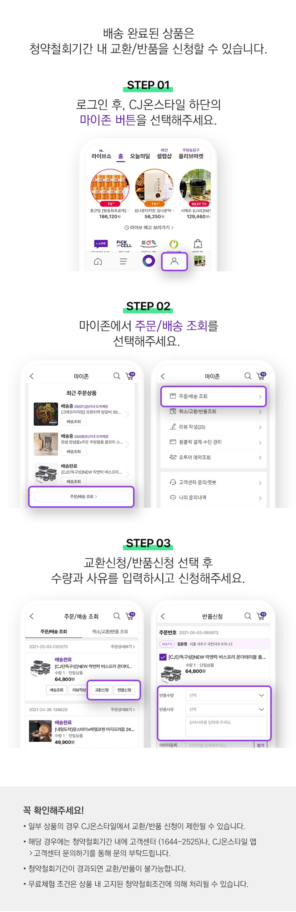
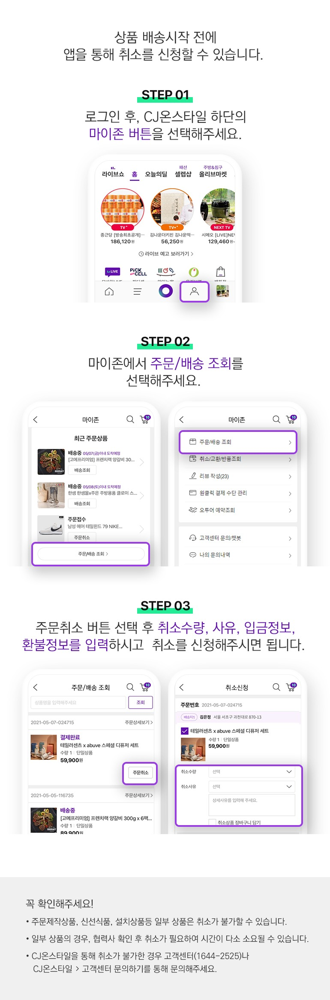
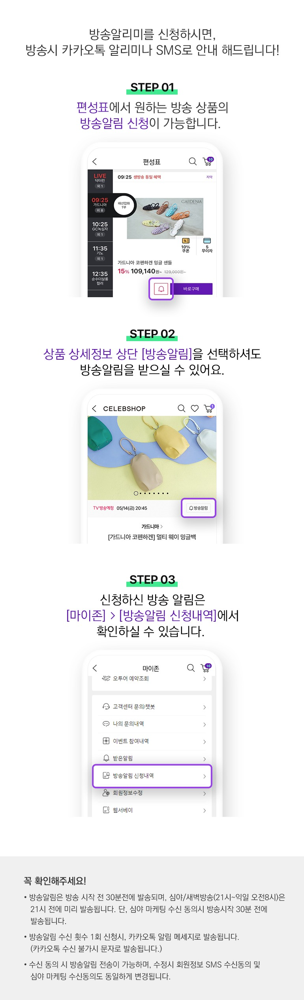
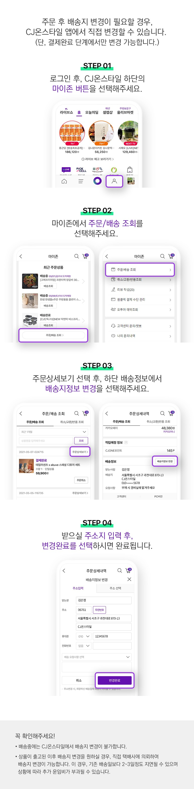
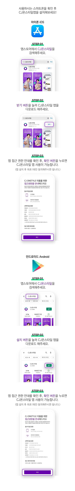

검색
자주하는 질문 top10
1
반품 신청은 어떻게 하나요?

2
주문을 취소하고 싶어요.

3
리뷰는 어떻게 작성하나요?
4
반품 시 별도 택배비가 부과되나요?
5
원하는상품 방송시간을 문자로 받고 싶어요

6
회원탈퇴는 어떻게 하나요?
7
배송지를 변경 할 수 있나요?

8
교환 신청은 어떻게 하나요?
9
CJ온스타일 앱(어플리케이션)은 어떻게 설치하나요?

10
결제수단 변경하려면 주문취소하고 재주문하나요?